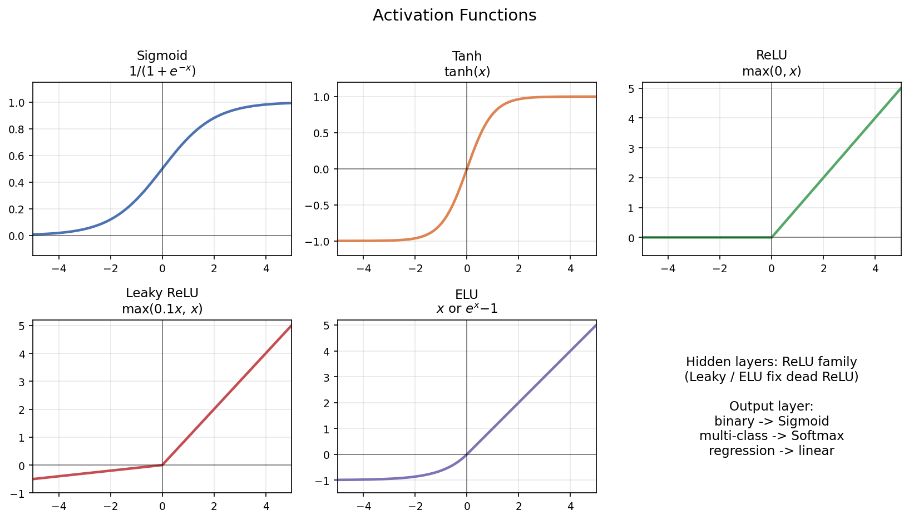
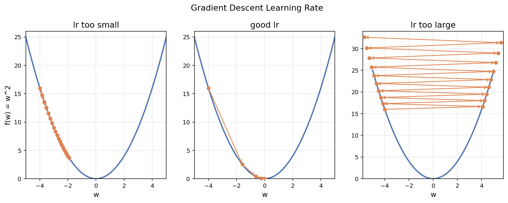

深度學習訓練基礎¶
古典 ML（見〈Géron Ch1–9〉、〈ML 面試核心觀念〉）之後，進到神經網路就會反覆碰到同一組「訓練零件」。本文把它們整理成一條訓練迴路：前向傳播算輸出 → 損失函數量誤差 → 反向傳播算梯度 → 優化器更新權重，再加上防過擬合與 CNN 入門。
1. 激活函數（Activation）¶
非線性的來源——沒有它，疊再多層線性層仍等於一層線性。
| 函數 | 範圍 | 特點 / 問題 |
|---|---|---|
| Sigmoid | (0,1) | 輸出像機率；兩端飽和 → 梯度消失；非零中心 |
| Tanh | (−1,1) | 零中心、收斂較 sigmoid 好；仍會飽和 |
| ReLU | [0,∞) | 計算快、緩解梯度消失（正區梯度恆 1）；Dead ReLU（負區恆 0 → 神經元死掉） |
| Leaky ReLU | ℝ | 負區給小斜率 max(ax,x)，緩解 dead ReLU |
| ELU | ℝ | 負區平滑、輸出近零中心；計算較貴 |
| PReLU | ℝ | Leaky 的可學版本（斜率 α 由訓練學出） |
| Softmax | (0,1) 且總和=1 | 多分類輸出層用，輸出各類機率 |

圖：五種常見激活函數。Sigmoid／Tanh 兩端飽和（梯度消失）；ReLU 系在正區梯度恆 1、計算快。選用原則：隱藏層預設 ReLU（不行再試 Leaky/ELU）；輸出層——二元分類 Sigmoid、多元分類 Softmax、回歸用線性（不加激活）。
🎤 面試口答
- 為何 ReLU 取代 Sigmoid 當隱藏層：Sigmoid 兩端飽和、梯度趨近 0，深層會梯度消失；ReLU 正區梯度恆為 1、計算又快。
- Dead ReLU 是什麼、怎麼解：負區梯度為 0，某些神經元一旦落到負區就永遠不更新（死掉）；用 Leaky ReLU / ELU / PReLU 給負區一點斜率。
- 為何 Tanh 比 Sigmoid 好一點：零中心，梯度更新方向較不偏，收斂通常較快（但仍會飽和）。
2. 損失函數（Loss）¶
量化「預測 vs 真實」的差距，訓練就是最小化它。
- 回歸：MSE（重罰大誤差、常用）、MAE（對 outlier 穩健）。詳見〈ML 面試核心觀念 · 評估指標〉。
- 分類：Cross-Entropy——binary_crossentropy（二元）、categorical_crossentropy（多元，label 為 one-hot）、sparse_categorical_crossentropy（多元，label 為整數）。
- Hinge Loss：max(0, 1 − y·ŷ)，SVM 的損失，只懲罰落在 margin 內/錯邊的點。
- 自訂 Loss：依商業成本設計，例如備貨問題「賣不掉的成本 ≠ 缺貨的損失」時用非對稱損失。
🎤 面試口答
- 分類為何用 Cross-Entropy 不用 MSE：配 sigmoid/softmax 時 CE 的梯度形式乾淨、不會因飽和而梯度消失，且來自最大似然；MSE 在此非凸、收斂慢（延伸見〈ML 面試核心觀念 · 線性 vs 邏輯回歸〉）。
- categorical vs sparse categorical：差在 label 格式——one-hot 用 categorical、整數索引用 sparse，數學等價。
3. 優化器（Optimizer）¶
更新規則 w ← w − η·∇L(w)（η＝learning rate）。梯度下降本身不保證找到全局最小。三種基本梯度下降（Batch/SGD/Mini-batch）見〈ML 面試核心觀念 · 梯度下降〉，這裡看自適應優化器。
| 優化器 | 核心 | 重點 |
|---|---|---|
| SGD + Momentum | 累積過去梯度方向（慣性） | 加速一致方向、抑制震盪；momentum=0.9 常用 |
| Nesterov | 在「往前一步後」的位置算梯度 | 比一般 momentum 更前瞻、收斂更穩 |
| Adagrad | 每參數自適應 lr（除以歷史梯度平方和的根） | 稀疏特徵友善；缺點：lr 隨時間累積遞減 → 後期學不動 |
| RMSprop | 改用梯度平方的指數移動平均 | 解決 Adagrad 的 lr 消失；RNN 常用 |
| Adam | Momentum + RMSprop | β₁=0.9（一階動量）、β₂=0.999（二階）、含 bias correction；現代預設首選 |
Learning rate scheduling：常見 lr = lr₀ / (1 + decay·step)，或 plateau 時衰減——初期大步、後期小步收斂到谷底。

圖：同一個 loss 曲面上，learning rate 太小（步伐太小、收斂慢）／適中（順利收斂）／太大（震盪甚至發散）。🎤 面試口答
- Adagrad 為何後期學不動：分母是歷史梯度平方的累加，只增不減，lr 被越除越小。RMSprop 改成指數移動平均（會遺忘久遠梯度）就解決了。
- Adam 由什麼組成：Momentum（一階動量 m）＋ RMSprop（二階動量 v）＋ 對早期迭代的 bias correction；預設參數就很好用。
- Adam vs SGD：Adam 收斂快、好調；但 SGD+Momentum＋好的 lr schedule 有時最終泛化更好——Adam 偶爾收斂到泛化較差的平坦解。
4. 反向傳播（Backpropagation）¶
把「誤差」用鏈式法則逐層往回分配到每個權重，算出 ∂L/∂w，再交給優化器更新。
1. 前向：算出各層輸出與最終預測。
2. 算損失。
3. 反向：從輸出層往輸入層，逐層用鏈式法則算梯度。
4. 更新：優化器依梯度調整權重。
前提：監督式（要有 label 算誤差）＋激活函數可微。梯度在很深的網路連乘，太小會梯度消失、太大會梯度爆炸——這正是 ReLU、BatchNorm、殘差連接等技巧要對付的問題。
🎤 面試口答
- Backprop 在做什麼：用鏈式法則把總損失對每個權重的偏導數算出來，本質是「把預測誤差的責任分配回每個參數」。
- 梯度消失/爆炸怎麼來、怎麼解：深層梯度連乘，<1 連乘趨 0（消失）、>1 連乘爆炸；解法：ReLU 系激活、BatchNorm、殘差連接、梯度裁剪、合適初始化。
5. 正則化技巧（防過擬合）¶
L1/L2 的本體見〈ML 面試核心觀念 · 正則化〉（NN 裡 L2 即 weight decay）。NN 特有的兩招：
- Dropout：訓練時隨機「關掉」一部分神經元（常
p=0.2~0.5），強迫網路不依賴特定神經元（防 co-adaptation）。推論時不關、並做縮放以維持期望值一致。直覺上等於在訓練無數個共享權重的子網路再集成（2ⁿ 種組合）。 - Batch Normalization：對每個特徵在 batch 內標準化（減均值除標準差再縮放平移）。訓練用當前 batch 統計、推論用訓練期累積的 moving average。好處：緩解梯度消失/內部協變偏移、可用更大 learning rate、帶輕微正則化效果。
- Early Stopping：監看 validation loss，回升（不再進步）就停。它不是讓模型更強，而是阻止它變更差。
- Data Augmentation：擴增資料多樣性（影像旋轉/翻轉/調色；文字同義替換/回譯）。
🎤 面試口答
- Dropout 訓練與推論差別：訓練隨機關神經元；推論全開但對輸出做縮放，讓期望值與訓練時一致。
- 為何 Dropout 像 ensemble：每個 batch 等於訓練一個隨機子網路，最後共享權重相當於多個子網路平均。
- BatchNorm 訓練與推論為何不同：訓練用該 batch 的均值/變異；推論沒有 batch，改用訓練期累積的 moving average，才能對單一樣本穩定輸出。
6. 訓練實務¶
- Epoch：完整跑過一次全部訓練資料；Iteration：一個 batch 的一次更新；Batch size：每次 iteration 的樣本數（預設 32，常取 2 的次方）。大 batch 較穩、吃 GPU 但泛化可能略差、耗記憶體。
- 常用 Keras callbacks：
EarlyStopping：val 指標不再進步就停（配patience、restore_best_weights）。ModelCheckpoint：自動存下表現最好的權重。ReduceLROnPlateau：val 卡住時自動降 learning rate。
🎤 面試口答
Epoch vs Iteration：1 epoch = 跑完全部資料；若 10000 筆、batch=100，則 1 epoch = 100 iterations。
7. CNN 入門（卷積神經網路）¶
影像任務的主力。核心： - Filter / Kernel：一組小的可學權重，在影像上滑動做卷積、偵測 pattern（邊、角、紋理）。filter 的值是訓練學出來的，不是人工設計。 - 參數共享 + 局部連接：同一個 filter 掃全圖 → 參數遠少於全連接、且具平移不變性。 - 特徵階層：低層學線條/顏色 → 中層學形狀/輪廓 → 高層組成複雜物件（輪子、窗戶）。 - Pooling（如 Max Pooling）：降採樣、縮小尺寸、增強平移不變、降計算。
🎤 面試口答
CNN 為何比全連接適合影像：① 局部連接＋參數共享 → 參數量大減、不易過擬合；② 平移不變（同一物件出現在不同位置都認得）；③ 階層式自動學特徵，不用手工設計。
一頁總複習¶
- 激活：隱藏層 ReLU（dead ReLU 用 Leaky/ELU）；輸出層 二元 Sigmoid／多元 Softmax／回歸線性。
- 損失：回歸 MSE/MAE；分類 Cross-Entropy（整數 label 用 sparse）；SVM 用 Hinge。
- 優化器：Adagrad 後期學不動 → RMSprop（移動平均）→ Adam（業界預設）。
- 反向傳播：鏈式法則把誤差分配回權重；當心梯度消失/爆炸。
- 正則化：Dropout（訓練關、推論縮放）、BatchNorm（訓練用 batch、推論用 moving avg）、Early stopping、weight decay(=L2)。
- CNN：filter 學出來的、參數共享、平移不變、特徵階層。